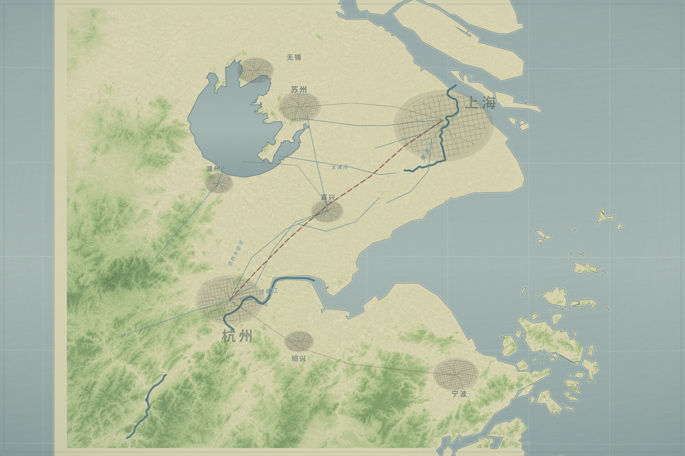

溯码律所 · 内部承办卷
INTERNAL / SML-2040-1115
数字遗产争议案 · 承办卷
SML-2040-1115
待承办
溯码
数字遗言
一名律师，一份真实上链却签署主体不明的数字遗嘱。庭前会议前，你要先保全仍可复核的事实。
承办指令 01
在证据成为叙事以前，先保全仍可复核的事实。
争议标的
数字人格使用权
庭前会议
次日上午 10:00
结案档案
0
种结果
接受委托
继续承办
查看结案档案
跳到主要内容
←
返回案件桌面
案件桌
溯
SML-2040-1115
刘刀鸣数字遗产争议
01
案件受理
正式承办
EVENT
01
新案受理摘要
本地自动保存
路线档案
案卷菜单
行动记录
证物袋
在办案件 · SML-2040-1115
刘刀鸣数字遗产争议
四方同时主张一个已经死亡的人。下一次行动，将决定哪一种证据先成为事实。
溯
内部案卷
仅限承办律师阅览
程序节点
案件受理
材料时点
晚上十一点十七
继续当前事件
新案受理摘要
↗
01
案件受理
02
事实核验
03
立场形成
04
庭前处置
05
结案归档
案件行动图 / 沪杭走廊
证据、人物与程序所在的位置
◎ 当前事件
○ 已发现
— 材料路线

沪杭材料通道
溯码律所
上海市中心 · 承办基地
互联网法院
上海长宁 · 程序机关
刘刀鸣公寓
杭州钱江新城 · 死亡现场
深瞳科技园
杭州西湖区 · 神经数据
递归猫工作室
未来科技城 · 模型节点
沪杭途中
嘉兴附近 · 移动事件
西南附图已展开
大理
私人关系线
卷宗
当前材料
证据与人物
案卷
案卷菜单
关闭